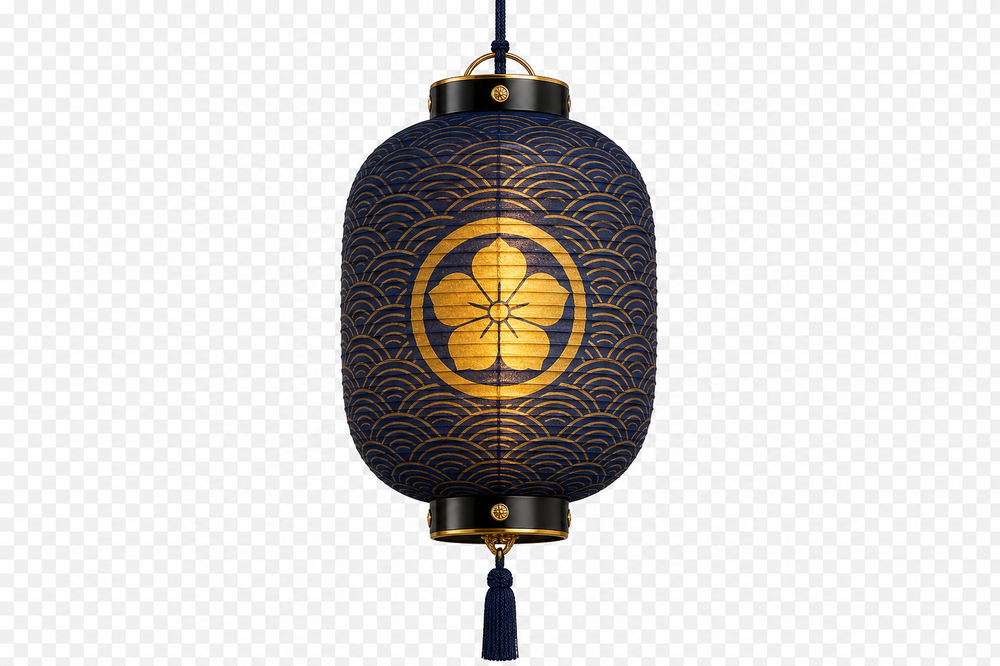
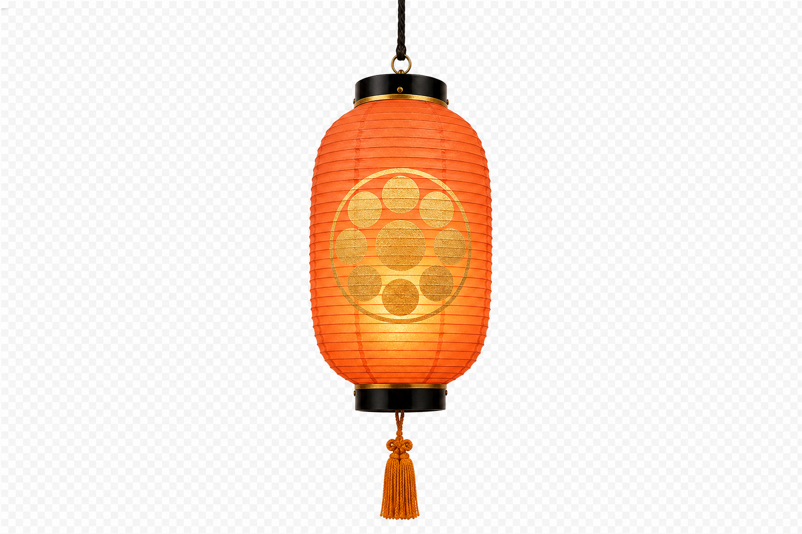
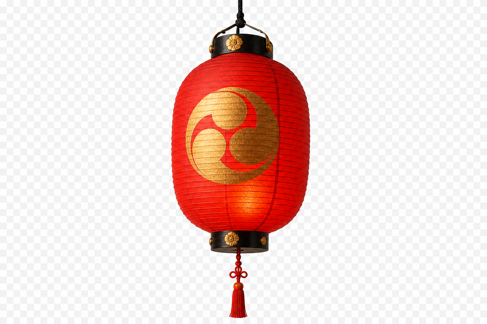
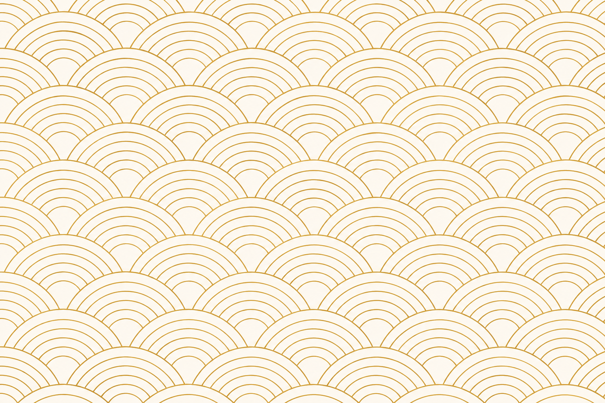
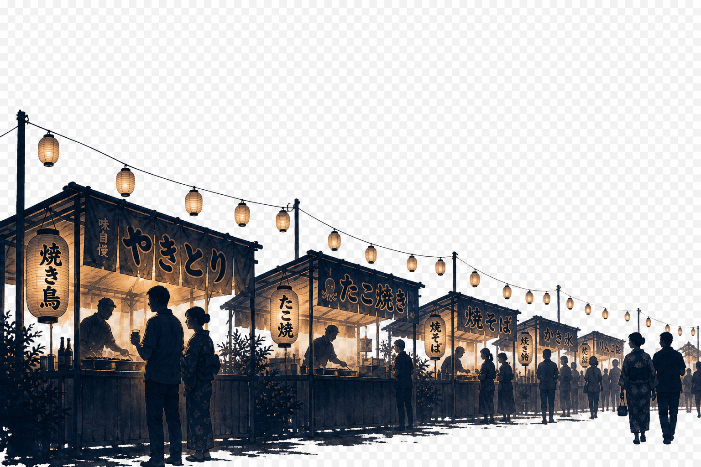

Yokohama Central Region
Business Open Day 2026
第 二 回 · 2026.8.26 (水)
※ メンバー専用ページ（members.html）はこのページからリンクしていません。URL を運営チームLINEに直接お貼りください。
members.html
Grano Chapter — Yokohama Central Region
← トップへ戻る